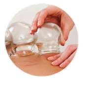
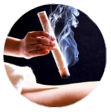
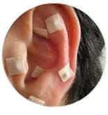

Sobre
O que é acupuntura?
A acupuntura faz parte da Medicina Tradicional Chinesa que visa a terapia e cura de doenças através de estimulos em pontos precisos do corpo humano, atuando diretamente no funcionamento psicológico, comportamental e biolõgico, sendo assim um excelelnte tratamnento indicado para adolescentes que sofrem com sntomas de ansiedade.
Onde o tratamento é aplicado?
O tratamento com acuputura é basedado em aplicação de estimulo em pontos específicos que se localizam na área de grande concentração de terminções nervosas. O estimulo dos pontos podem se dar de árias formas: agulhamento, calor (moxa), ventosa, magneto, laser e até mesmo por sementes. Promovendo a leberação de substancias químicas com efeito analgésico, anti-inflamatório, ansiolítico, antidepressivo, entre outros. Sendo assim indicafo para tratamento de trantorno de ansiedade em adolescentes.
Contatar Agora
Serviço

Agulhamento
Técnica que equlibra e harmoniza a energia interna do organusmo com as energias do ambiente, por isso, a utilização da acuputura é benéfica para tratar dores e doenças.

Ventosaterapia
Técnica que equlibra e harmoniza a energia interna do organusmo com as energias do ambiente, por isso, a utilização da acuputura é benéfica para tratar dores e doenças.

MoxaBustão
Técnica que utiliza o calor, induzindo ao relaxamento, diminuição da rigidez muscular e provando um aumento local da circulação sanguínea, causando efeitos positivos no sistema imunológico.

Auriculoterapia
Estimula pontos na orelha que correspondem aos nossos órgãos e algumas funções do corpo. Quando estimulados, o cérebro recebe um impulso e reage, promovendo o equilíbrio do corpo.